에스텍 그룹 · 사용자용
Program for Process Standardization and Manual Creation
사용자 매뉴얼
업무표준서 · 업무매뉴얼 작성 · 출력 · v1.5.0 · 2026.11.20(금)
□ 목차 1. 프로그램 소개 2. 설치 · 실행 3. 로그인 · 가입 신청 4. 화면 구성 5. 상단 기능 6. 다운로드 QR · 친구 추천 7. ① 적용 사업장 선정 8. ② 업무표준서 항목 선택 9. ② 업무매뉴얼 장 · 절 선택 10. ③ 작성 정보 입력 11. ④ 검토 · 편집 · 출력 12. 업무매뉴얼 출력물 13. 🧭 세부 작업표준(SOP) 14. 🎬 영상 재생 15. 🆘 비상대처 매뉴얼 16. 📦 사업장 자료 패키지 17. ₩ 견적 연동 18. 📎 RFP · 과업지시서 · 공고문 불러오기 19. 업무표준서 출력물 20. 업무 서식 목록 21. 출력 기록 22. 휴대폰에서 사용 23. 자주 묻는 질문 |
1. 프로그램 소개
직종·산업·사업장을 고르면 근로기준법·노동관계법·경비업법·산업안전보건법 기준의 「업무표준서」와 [Manual - Project] 체계의 「업무매뉴얼」을 Word·PPT·PDF로 바로 만들어 주는 에스텍 그룹 프로그램입니다.
▲ 메인 화면
구분 | 내용 |
|---|---|
업무표준서 | 대분류 7 · 중분류 15 · 표준 50개 — 직무·근태·복무·안전·인사노무·품질·인력산정 표준 |
업무매뉴얼 | Manual-Project 4계층(통합·직종별·직종×산업·현장별) · 11장 36절 · 사건사고 상황별 대처 24건 · 판례 10건 |
업무 서식 | 업종별 대장·점검표·보고서 38종 — 매뉴얼과 별도 Word 「업무 서식집」(사업장명 미리 기재 · 인쇄용) |
멀티미디어 | 직종별 3D 피규어 · 현장 사진 · 근무 영상(PPT 재생) · 영상 QR(Word) · Complaint 사례 영상 7편 |
연계 프로그램 | 근태관리(근무조 코드) · 업무량 산정(업무 분류·표준시간) · Complaint 대응 · 견적시스템 · 단기견적 · 사업장 지도 |
출력 | Word(머리글·바닥글·결재란·점검표) · PPT(16:9, 영상 포함) · PDF(PPT와 같은 디자인) |
2. 설치 · 실행
PC·휴대폰 어디서나 같은 아이디로 씁니다.
▶ 순서
1. PC: 웹 주소 https://sadness500-boop.github.io/Program-for-Process-Standardization-and-Manual-Creation/ 를 열거나, 버전별 HTML 파일을 더블클릭
2. 안드로이드: 상단 「다운로드 QR」 → APK 내려받기 → 출처를 알 수 없는 앱 허용 → 설치(새 버전은 덮어 설치)
3. 아이폰: 사파리로 웹 주소 열기 → 공유 → 「홈 화면에 추가」
💡 APK는 GitHub Actions가 자동으로 만듭니다. 최신판 주소: https://github.com/sadness500-boop/Program-for-Process-Standardization-and-Manual-Creation/releases/download/app-latest/stos-latest.apk |
3. 로그인 · 가입 신청
에스텍 통합 로그인(SSO) — 메인 프로그램 「S-Tec Operations」과 근태관리·Complaint·견적 등 7개 프로그램을 하나의 아이디로 씁니다. 한 기기에서 한 번 로그인하면 다른 프로그램도 다시 로그인하지 않고 열립니다.
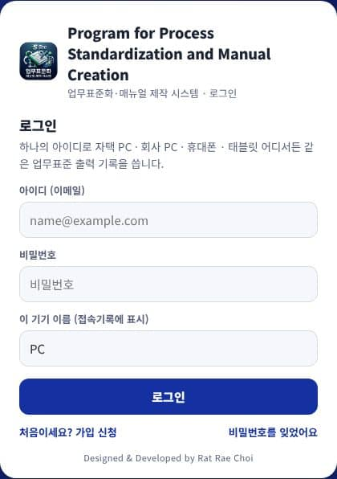
▲ 로그인 화면
▶ 순서
1. 처음이면 「가입 신청」(이메일·성명·소속) → 제작자·관리자 승인 후 사용
2. 로그인 시 「이 기기 이름」을 적으면 접속기록에 남습니다
3. 처음 쓰는 기기는 「📲 새 기기 승인 대기」가 나옵니다 — 제작자가 승인하면 「다시 확인」
4. 비밀번호를 잊으면 「비밀번호를 잊었어요」 → 관리자가 임시 비밀번호 발급
4. 화면 구성
▲ ① 사업장 → ② 항목 → ③ 작성 정보 → ④ 검토·출력
영역 | 하는 일 |
|---|---|
상단 밴드 | 앱 아이콘 · 프로그램 이름(2줄) · 버전, 업무표준 담당 · 다운로드 QR · 친구 추천 · 내 계정 · 주간/야간/시스템 |
① 적용 사업장 선정 | 에스텍베스트 사업장 151곳(지사별, 통합관리 공통 기준정보에 새로 등록된 사업장 자동 반영) · 검색 · 직접 입력 · 전사 공통 |
② 항목 선택 | 📋 업무표준서 / 📘 업무매뉴얼 전환 · 대·중·소 분류 · 검색 |
③ 작성 정보 | 직종 · 매뉴얼 계층 · 산업 · 근무조 코드 · 문서명 · 결재 · 특이사항 · 문서 용도 |
④ 검토 · 출력 | Word · PPT · PDF(PPT 내용) 3종 · 📝 업무 서식 · 📦 사업장 자료 패키지 |
₩ 견적 연동 (왼쪽 위) | 견적 3종·엑셀/PDF 견적서·직접 입력 → 인력 운영 기준 |
📎 RFP 불러오기 (③ 위) | 제안요청서·과업지시서 → 과업 요구사항 대응표 |
🏠 메인 (왼쪽 아래) | 통합관리 시스템 「S-Tec Operations」 메인 화면으로 이동 |
5. 상단 기능
상단 카드는 에스텍 프로그램 그룹 공통 구성입니다.
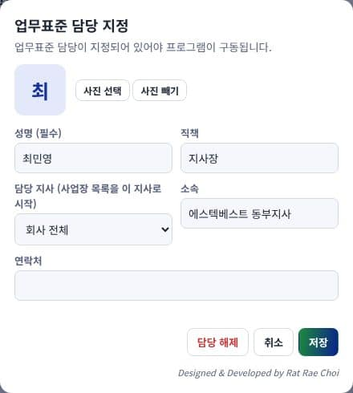
▲ 업무표준 담당 지정
카드 | 기능 |
|---|---|
업무표준 담당 | 담당자(사진·성명·직책·지사)를 지정해야 프로그램이 열립니다 — PPT 「표준 관리 책임」에 표시 |
다운로드 QR | 웹 주소·APK QR을 크게 보여 줍니다(휴대폰 카메라로 설치) |
친구 추천 | 프로그램 소개 문구·주소를 복사·공유 |
내 계정 | 로그인 정보 · 기록 동기화 · 로그아웃 · (관리자) 관리자 페이지 |
주간/야간/시스템 | 화면 밝기 테마 |
6. 다운로드 QR · 친구 추천
▲ 다운로드 QR
▶ 순서
1. 「다운로드 QR」을 누르면 웹 주소와 안드로이드 앱 QR이 크게 나옵니다
2. 「친구 추천」으로 소개 문구와 주소를 카카오톡·문자로 보냅니다
7. ① 적용 사업장 선정
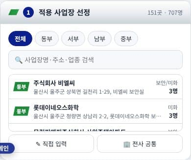
▲ 사업장 목록
▶ 순서
1. 지사(동부·서부·남부·중부)를 고르거나 사업장명·주소·업종으로 검색
2. 사업장을 누르면 직종·산업·기준 근무형태가 자동으로 맞춰집니다
3. 목록에 없으면 「✎ 직접 입력」, 회사 공통 문서면 「🏢 전사 공통」
💡 관리 범위(담당 지사)가 지정된 계정은 그 지사 사업장만 보입니다. |
8. ② 업무표준서 항목 선택
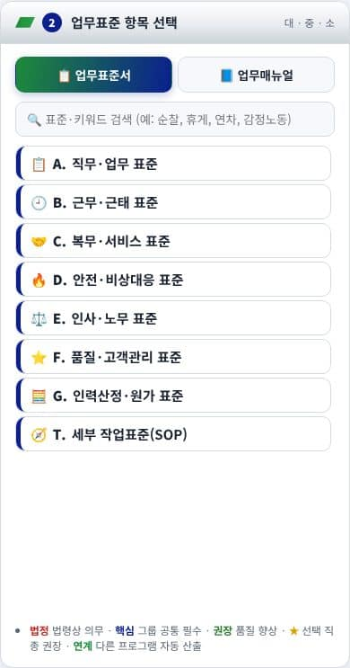
▲ 📋 업무표준서 — 대·중·소 분류
▶ 순서
1. ②에서 「📋 업무표준서」 선택
2. 대분류(A~G)를 펼쳐 표준 항목을 누름(최대 40개)
3. 「📦 직종 권장 패키지」로 직종 권장 표준을 한 번에 선택
표시 | 뜻 |
|---|---|
법정 | 법령상 의무 |
핵심 | 에스텍 그룹 공통 필수 |
권장 | 품질 향상 권장 |
★ | 선택한 직종의 권장 표준 |
연계 | 근태·업무량·견적 등 다른 프로그램 자료로 표가 자동 생성 |
내부 | 고객사 제출용에서는 빠지는 항목(징계·견적 등) |
9. ② 업무매뉴얼 장 · 절 선택
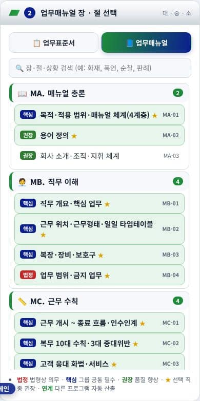
▲ 📘 업무매뉴얼 — 11장 36절
▶ 순서
1. ②에서 「📘 업무매뉴얼」 선택 → 계층 권장 구성이 자동 선택됨
2. ③ 「매뉴얼 계층」에서 통합(1계층)·직종별(2계층)·직종×산업(3계층)·현장별 근무지침(4계층) 중 선택
3. 필요한 장·절을 더하거나 빼기 — 「영상」 표시는 사진·영상이 들어가는 절
장 | 내용 |
|---|---|
📖 매뉴얼 총론 | 목적·적용 범위·매뉴얼 체계(4계층) · 용어 정의 · 회사 소개·조직·지휘 체계 |
🧑💼 직무 이해 | 직무 개요·핵심 업무 · 근무 위치·근무형태·일일 타임테이블 · 복장·장비·보호구 · 업무 범위·금지 업무 |
📏 근무 수칙 | 근무 개시 ~ 종료 흐름·인수인계 · 복무 10대 수칙·3대 중대위반 · 고객 응대 화법·서비스 · 이런 행동은 안 됩니다 |
🛠 핵심 업무 절차 | 직종 핵심 업무 절차 · 표준 업무 목록·수행 빈도 · 일일 점검 체크리스트 |
🧭 직무 상세 작업표준 | 근무 기본 작업표준 (4건) · 출입 통제 작업표준 (6건) · 순찰 작업표준 (3건) · CCTV 관제 · 영상 관리 작업표준 (2건) · 열쇠 · 장비 관리 작업표준 (2건) · 비상 대응 작업표준 (7건) · 응대 · 민원 작업표준 (3건) |
🏭 산업별 특수 업무 | 산업 특성·주요 리스크·현장 포인트 · 산업별 추가 법령·고객 요구 |
🚨 사건사고 상황별 대처 | 화재·가스·폭발 · 응급환자·안전사고·근무자 재해 · 침입·도난·수상한 물건 · 폭언·폭행·소란·집회 · 차량·주차 사고 · 정전·승강기·자연재난·누수 · 약품·위생·식중독·해충 · 개인정보·부당지시·괴롭힘 |
🆘 비상대처 매뉴얼 | 🚨 사건사고 대응 · 🌪 천재지변 발생 시 · 📢 집단민원 발생 시 · 🔥 화재 발생 시 · 😡 소란,난동자 발생 시 · 🚷 침입이상 발생 시 · 🚑 응급환자 발생 시 · ⚠ 가스 누출사고 발생 시 · 🔐 보안사건 발생 시 · 🎤 매스컴 대응 시 · 💣 대 테러 발생 시 |
⛑ 안전보건 | TBM·위험성평가·안전보건교육 · 직종 위험요인과 예방대책 |
📝 보고·기록 | 보고 체계(즉보)·6하원칙 보고서 · 근무일지·기록 관리 |
⚖️ 법적 근거·판례 | 관계 법령 요약 · 주요 판례·행정해석 요지 |
🗂 업무 서식(양식) | 공통 서식 · 직종 업무 서식 · 안전·보고 서식 |
📍 현장별 근무지침 | 사업장 현황·근무 배치 · 사업장 특수 지시사항 · 비상연락망·위치도 |
10. ③ 작성 정보 입력
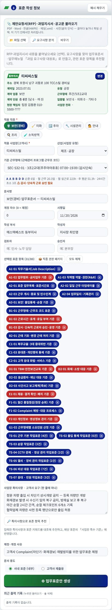
▲ ③ 표준 작성 정보
▶ 순서
1. 적용 직종(7개) 선택 — 사업장을 고르면 자동
2. 산업(12개)·기준 근무형태(근태관리 근무조 코드) 확인 — 월 근로시간·조 수·법정 확인이 바로 표시
3. 문서명·개정 차수·시행일·작성/검토/승인자 입력
4. 사업장 특이사항(한 줄에 하나) → 「🔎 특이사항으로 표준 항목 추천」
5. 문서 용도: 사내 표준(내부) / 고객사 제출용
💡 「예시 채우기」를 누르면 TCC스틸 보안 사례가 채워집니다. |
11. ④ 검토 · 편집 · 출력
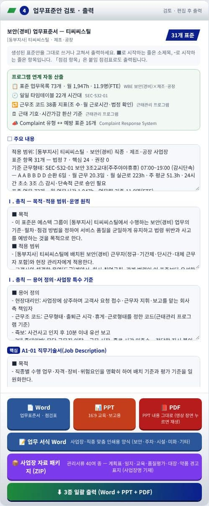
▲ 생성된 업무표준안 편집
▶ 순서
1. [⚙ 업무표준안 생성] 또는 [📘 업무매뉴얼 생성]
2. ■ 로 시작하는 줄은 소제목, - 로 시작하는 줄은 항목 — 자유롭게 고침
3. 법적 근거에서 출력할 법령 선택
4. Word · PPT · PDF 또는 「3종 일괄 출력」
💡 PPT는 현장 영상이 함께 들어가 파일이 큽니다(20~35MB). PDF는 PPT와 같은 디자인의 이미지 문서입니다. |
12. 업무매뉴얼 출력물
문서번호: 1계층 STB-COM-000 · 2계층 STB-직종-100 · 3계층 STB-직종-101~112 · 4계층 STB-직종-9xx
Word 붙임: 일일 점검표 · 교육 확인서 · 경위서(6하원칙) · 업무 서식 목록
업무 서식이 들어간 매뉴얼을 Word로 출력하면 「업무 서식집」 Word 파일이 함께 저장됩니다.
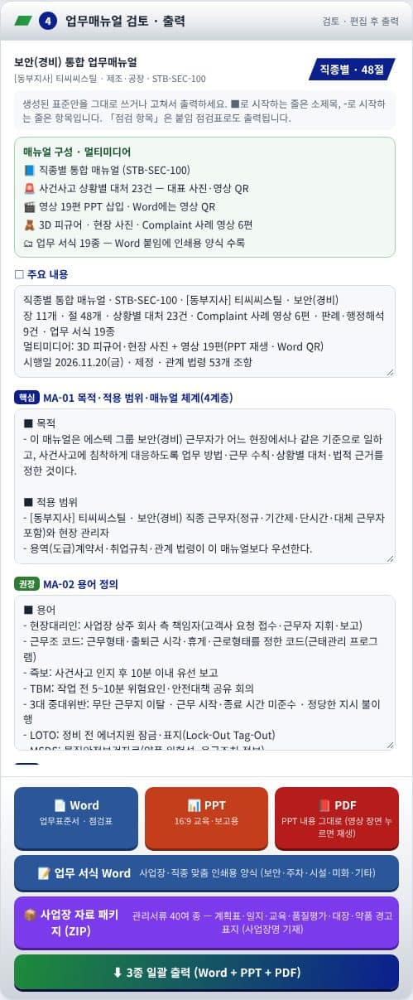
▲ 업무매뉴얼 생성 결과
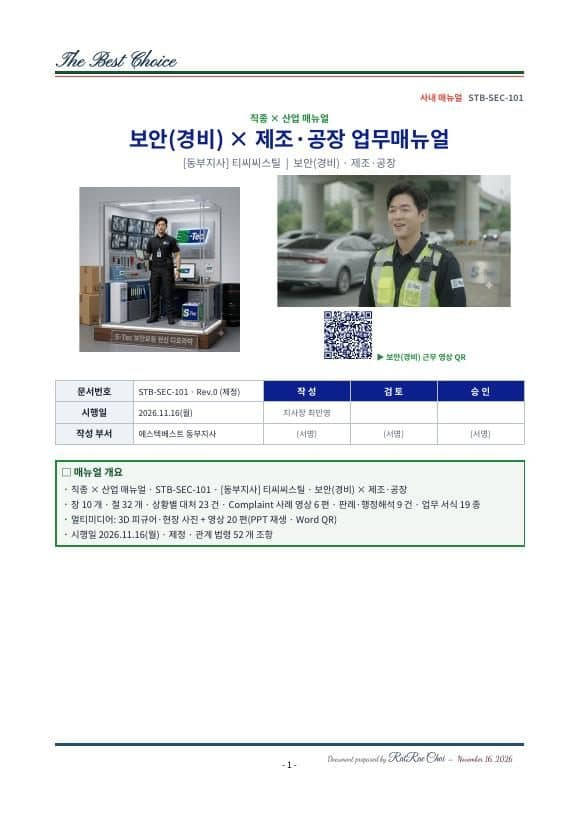
▲ Word 표지 — 3D 피규어 · 현장 사진 · 영상 QR
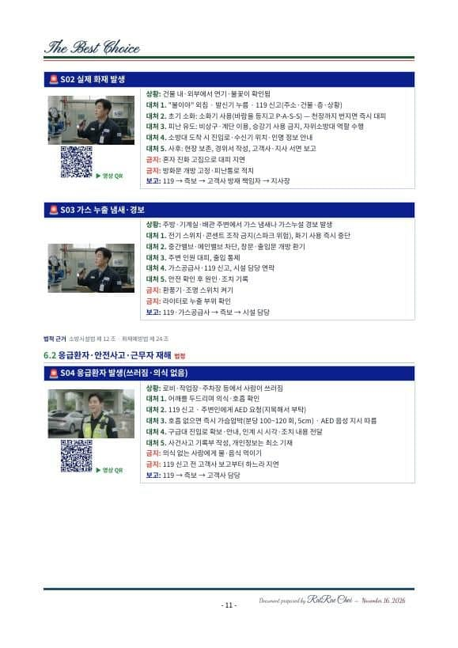
▲ Word 상황별 대처 카드 — 사진 · 영상 QR · 대처 순서
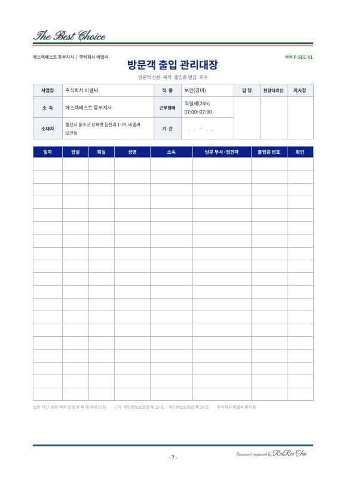
▲ 별도 Word 업무 서식집 — 사업장명·소속·직종이 미리 적힌 인쇄용 양식
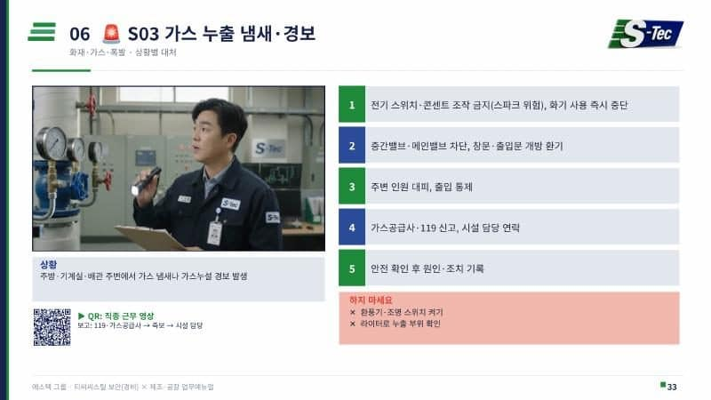
▲ PPT 상황별 대처 — 영상 재생 · 단계 카드 · 금지 행동
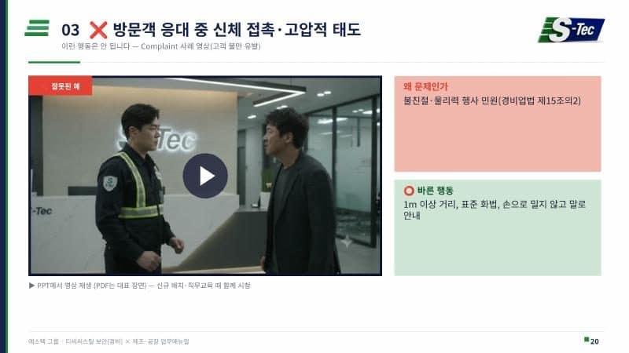
▲ PPT 「이런 행동은 안 됩니다」 — Complaint 사례 영상
13. 🧭 세부 작업표준(SOP)
직종별 세부 작업표준 114건 — 업무표준서 「T. 세부 작업표준」, 업무매뉴얼 「직무 상세 작업표준」 장에 자동으로 들어갑니다.
작업 1건마다 주기·소요시간·담당·도구·약품(희석비율)·보호구·단계별 동작과 요령·완료 기준·금지 사항·기록 양식을 적어, OJT 없이도 문서만 보고 일할 수 있게 했습니다.
직종 | 구역 · 작업 수 |
|---|---|
보안(경비) | 근무 기본(4) · 출입 통제(6) · 순찰(3) · CCTV 관제 · 영상 관리(2) · 열쇠 · 장비 관리(2) · 비상 대응(7) · 응대 · 민원(3) |
미화 | 화장실(8) · 사무실(4) · 계단 · 복도(3) · 로비 · 출입구(5) · 샤워실 · 탈의실(3) · 엘리베이터 · 에스컬레이터(2) · 주차장(2) · 외곽 (보도 · 화단 · 흡연장)(4) · 기상 대응 (우천 · 강설)(2) · 카페트 · 천장 · 유리(정기)(4) · 특수작업 (대청소)(3) · 장비 · 약품 · 창고 관리(4) · 미화소장 · 반장 관리업무(3) |
주차 | 입·출차 유도(3) · 정산 · 등록(3) · 주차장 관리(4) |
시설관리 | 일상 점검(3) · 보수 작업(5) · 비상 · 법정 관리(3) |
안내 | 안내 데스크(5) |
조리 | 개인 위생(2) · 식재료 관리(2) · 조리 · 배식(3) · 세척 · 주방 안전(3) |
소독방역 | 소독 작업(4) |
💡 작업 목록 줄을 지우면 그 작업은 출력에서 빠집니다. 미화는 에스텍 미화 종합 매뉴얼·약품 희석비율·품질평가 체크리스트를 기준으로 합니다. |
14. 🎬 영상 재생
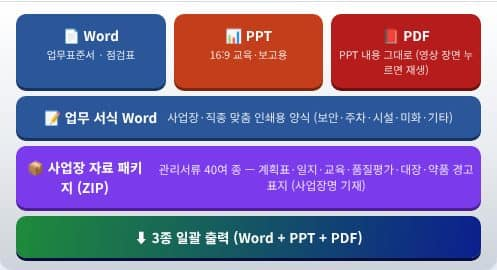
▲ ④ 출력 버튼 — Word · PPT · PDF 3종
▶ 순서
1. PPT는 현장 영상이 슬라이드 안에 들어가 누르면 재생됩니다
2. PDF는 PPT 내용을 그대로 PDF로 만든 것이며, 영상 장면을 누르면 웹에서 재생됩니다
3. Word는 영상 장면 옆 QR을 휴대폰으로 비추면 재생됩니다
💡 글씨는 본문 최소 11pt·진한 색으로 바꿔 시인성을 높였습니다. |
15. 🆘 비상대처 매뉴얼
업무매뉴얼에 「비상대처 매뉴얼」 장이 추가되었습니다 — 에스텍 비상대처 매뉴얼 원문 11개 장(사건사고·천재지변·집단민원·화재·소란난동·침입이상·응급환자·가스누출·보안사건·매스컴·대테러)을 순서대로 수록합니다.
원문에서 그림으로만 있던 항목(화재의 기본이론·소화 방법·화재 종류 등)은 표준 내용으로 보충해 초록 글씨로 표시합니다.
장 | 주요 내용 |
|---|---|
사건사고의 대응 | 사건 사고란? · 업무 수행 중 발생되는 사건사고 종류 · 사건사고 발생 시 유형별 조치요령 · 기타 사고 대응 요령 · 사건 사고 시 보고요령 · 사업장 사건사고 발생시 현장 보존 요령 · 현장조사 (사고접수 즉시) · 사건사고 보고서 작성 (사고발생 12 hr 이내) |
천재지변 발생 시 | 천재지변 이란? · 천재지변 종류 · 천재지변 발생 시 착안 사항 · 천재지변 발생 시 대처요령 |
집단민원 발생 시 | 집단민원이란? · 집단민원의 종류 · 집단민원 발생 시 대처요령 · 집단 민원 발생 시 유의사항 · 집단민원 현장의 경비업 업무처리 기준 |
화재 발생 시 | 화재의 기본이론 · 소화 방법의 종류 · 화재발생 원인별 분류 · 화재의 종류 · 화재 유형별 소화요령 · 화재예방을 위한 착안 사항 · 화재발생 시 응급조치 활동 · 대피 유도 요령 |
소란,난동자 발생 시 | 소란,난동자란? · 소란,난동자 종류 · 소란,난동자 발생 시 대처요령 · 소란,난동자 대처 시 유의사항 |
침입이상 발생 시 | 침입이상이란 ? · 침입이상의 종류 · 침입이상 발생시 대처요령 · 침입이상 발생 시 유의 사항 |
응급환자 발생 시 | 응급 환자, 처치란? · 응급 환자 발생 시 행동요령 · 응급 환자 발생 시 유의사항 |
가스 누출사고 발생 시 | 가스 누출(漏出) 사고란? · 가스 누출 사고 시 대처요령 · 가스누출 (漏出) 사고 시 유의사항 · 가스사고 발생가능 지역 및 점검 사항 |
보안사건 발생 시 | 보안 사건이란? · 보안 사건의 종류 · 보안 사건 예방을 위한 업무 처리 기준 (사업장에서 운영 中인 내용 및 기준 기재) · 보안사고 발생(적발) 시 대처요령 (사업자에서 운영 中인 기준 기재) |
매스컴 대응 시 | 언론 대응 목표 · 대 언론 대응 방법 · SE의 대 언론 대응 요령 |
대 테러 발생 시 | 테러 란? · 테러의 개념 · 테러의 유형 · 테러 사건 발생 시 대처 요령 및 유의사항 |
16. 📦 사업장 자료 패키지
▶ 순서
1. ①에서 사업장, ③에서 직종을 고릅니다
2. ④ 출력의 「📦 사업장 자료 패키지 (ZIP)」를 누릅니다
3. ZIP을 풀면 「00. 서류 종합 LIST」와 번호순 서류 36~52종(Word·Excel)이 들어 있습니다 — 사업장명·소속·소재지·직종·작성자가 미리 적혀 있습니다
분류 | 들어가는 서류 |
|---|---|
인사 · 채용 | 관리감독자 지정서 · 구인 공고 의뢰서 · 면접 평가표(관리자·신입) · 근로계약서 · 휴가원 |
인수 · 편성 | 인수품목리스트 · 사업장 인수 액션플랜(D-30~D+30) · 근무 편성표(근무조 코드) |
교육 | 연간 교육계획 · 산업안전보건교육 자료 12개월·일지 · 성희롱 예방 · 개인정보 · 장애인 인식개선 |
계획 · 일지 · 보고 | 현장 책임자 일일 업무계획표 · 연간/일상/월간(보고·게시) 계획 · 요일별 중점 · 업무일지 · 월 실적 및 계획(작성 예시) · 사건사고 보고서 |
품질 · 재고 | 품질평가 체크리스트(자동 합계) · 구매 요청서(코드 입력 시 품명 자동) · 입·출고 현황 · 재고종합현황(자동 계산) · 장비이력카드 · 화장실 점검표 · 지원 요청서 |
약품 · 게시물(미화·방역) | 용품·약품 규격서 · 약품별 성분 · 특수건강진단 대상 유해물질 · 희석비율 게시표 · MSDS 경고표지 14종 · 네임텍 · 색상 구분표 · 중량물 취급주의 · 작업표준 게시물 |
직종 대장 | 직종별 업무 서식을 Excel 대장으로 + 업무 서식집(Word) |
17. ₩ 견적 연동
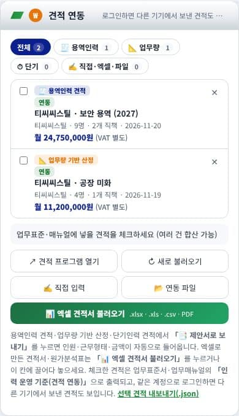
▲ 견적 연동 칸 (제안서 제작시스템과 같은 구성)
▶ 순서
1. 용역인력 견적 · 업무량 기반 산정 · 단기인력 견적에서 「📑 제안서로 보내기」를 누르면 왼쪽 「견적 연동」 목록에 들어옵니다
2. 탭(전체·용역인력·업무량·단기·직접/엑셀/파일)으로 나눠 보고, 반영할 견적을 체크합니다(여러 건 합산)
3. 체크하면 사업장·직종·근무형태(근무조 코드)가 자동으로 맞춰집니다 — 「⤵ 작성 정보에 반영」으로 다시 반영
4. 「📊 엑셀 견적서 불러오기」(.xlsx·.xls·.csv·PDF)나 끌어다 놓기로 엑셀 견적서·원가분석표를 읽습니다
5. 「✍ 직접 입력」으로 직종·직책·인원·근무형태·단가를 넣거나 「📂 연동 파일」(.json)을 불러올 수 있습니다
💡 체크한 견적은 업무표준서·업무매뉴얼에 「인력 운영 기준(견적 연동)」(직종·인원·근무형태 지표, 사내용은 금액·원가 구성 포함)으로 출력됩니다. |
18. 📎 RFP · 과업지시서 · 공고문 불러오기
▲ 요구사항 분석 결과
▶ 순서
1. ③ 맨 위 「📎 제안요청서(RFP)·과업지시서·공고문 불러오기」에 PDF·Word·한글(HWPX)·메일(.eml)·사진을 끌어다 놓거나 「📂 파일 선택」
2. 글자를 읽어 아래 칸에 넣고 「🔎 요구사항 분석」으로 요구사항을 14개 구분(인력·근무형태·업무 범위·교육·안전·법규·품질·장비·고용승계·인수인계·보험·가격·제출서류·비상)으로 나눕니다
3. 「↧ 작성 정보에 반영」 → 고객사·산업·직종·특이사항, 「★ 관련 표준 항목 선택」 → 요구사항과 관련된 표준·매뉴얼 장을 자동 선택
💡 분석한 요구사항은 출력물에 「과업 요구사항 대응표」(요구사항 · 관련 표준/매뉴얼 · 이행 방법)로 들어갑니다. 사진·스캔 PDF는 글자 인식(OCR)으로 읽어 시간이 조금 걸립니다. |
19. 업무표준서 출력물
Word: 결재란 · 제·개정 이력 · 총칙 · 사업장 개요 · 항목 체계 · 세부 기준(연계 표) · 법적 근거 · 이행 점검표 · 교육 확인서
▲ Word 업무표준서 표지 — 결재란 · 주요 내용
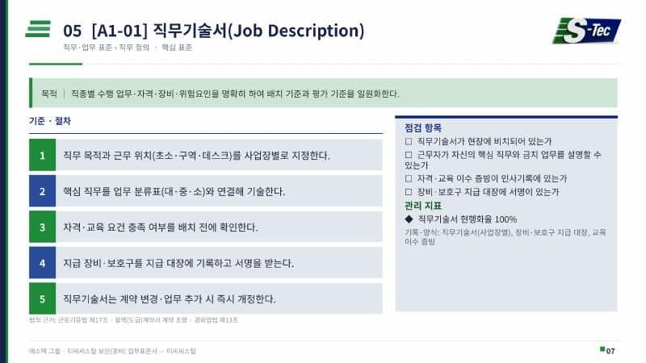
▲ PPT 표준 항목 슬라이드 — 절차 카드 · 점검 항목 · KPI
20. 업무 서식 목록
④ 출력의 [📝 업무 서식 Word] 버튼을 누르면 고른 사업장·직종에 맞는 서식만 모은 「업무 서식집」 Word가 따로 만들어집니다(총 38종 중 직종별 13~19종).
보안은 보안 서식, 주차는 주차 서식, 시설은 시설 서식, 미화는 미화 서식, 안내·조리·소독방역은 기타 업종 서식 + 공통·안전 서식이 들어갑니다.
사업장명·소속 지사·소재지·직종·근무형태가 미리 적혀 있고, 한 쪽에 한 서식씩 결재란(담당·현장대리인·지사장)과 함께 인쇄됩니다. 바닥글 서명에는 날짜가 들어가지 않습니다.
서식번호 | 서식명 | 직종 | 보존 기간 |
|---|---|---|---|
F-COM-01 | 근무일지 | 전 직종 | 3년 |
F-COM-02 | 인수인계 대장 | 전 직종 | 1년 |
F-COM-03 | 고객사 요청 접수 대장 | 전 직종 | 3년 |
F-COM-04 | 연차·휴가 신청서 | 전 직종 | 3년 |
F-COM-05 | 장비·보호구 지급 대장 | 전 직종 | 3년 |
F-SEC-01 | 방문객 출입 관리대장 | 보안(경비)·안내 | 방문 목적 달성 후 파기(최대 1년) |
F-SEC-02 | 차량 출입 대장 | 보안(경비)·주차 | 1년 |
F-SEC-03 | 물품 반출입 확인 대장 | 보안(경비) | 3년 |
F-SEC-04 | 순찰 기록부 | 보안(경비) | 1년 |
F-SEC-05 | 열쇠 관리대장 | 보안(경비)·시설관리 | 1년 |
F-SEC-06 | 습득물·분실물 관리대장 | 보안(경비)·안내·미화 | 1년 |
F-SEC-07 | CCTV 영상정보 열람 대장 | 보안(경비)·안내·주차 | 3년 |
F-SEC-08 | 화재경보 처리 대장 | 보안(경비)·시설관리 | 2년 |
F-CLN-01 | 구역별 청소 점검표 | 미화 | 1년 |
F-CLN-02 | 화장실 위생 점검표 | 미화 | 6개월 |
F-CLN-03 | 세제·약품 관리대장(MSDS) | 미화·소독방역 | 3년 |
F-CLN-04 | 소모품 재고 대장 | 미화 | 1년 |
F-CLN-05 | 정기청소 작업 계획·실적표 | 미화 | 1년 |
F-PRK-01 | 주차 관제 일지 | 주차 | 1년 |
F-PRK-02 | 정산 마감표 | 주차 | 5년 |
F-PRK-03 | 불법·장기 주차 계도 기록 | 주차·보안(경비) | 1년 |
F-PRK-04 | 주차장 사고 접수 기록 | 주차·보안(경비) | 3년 |
F-FAC-01 | 설비 일상점검표 | 시설관리 | 3년 |
F-FAC-02 | 법정 점검 연간 계획표 | 시설관리 | 5년 |
F-FAC-03 | 설비 이력카드 | 시설관리 | 설비 폐기 시까지 |
F-FAC-04 | 작업허가서 · LOTO 기록 | 시설관리·소독방역 | 3년 |
F-FAC-05 | 에너지 검침표 | 시설관리 | 3년 |
F-INF-01 | 전화 응대 · 메모 전달 기록 | 안내 | 6개월 |
F-CK-01 | 식재료 검수일지 | 조리 | 3개월 |
F-CK-02 | 보존식 관리대장 | 조리 | 6개월 |
F-CK-03 | 냉장 · 냉동고 온도 기록표 | 조리 | 3개월 |
F-CK-04 | 조리 종사자 위생 점검표 | 조리 | 3개월 |
F-SAN-01 | 소독 실시 대장 | 소독방역 | 2년 |
F-SAN-02 | 해충 트랩 점검표 | 소독방역·미화 | 1년 |
F-SAF-01 | TBM 일지 | 전 직종 | 3년 |
F-SAF-02 | 사건사고 보고서(6하원칙) | 전 직종 | 5년 |
F-SAF-03 | 위험성평가 점검표 | 전 직종 | 3년 |
F-SAF-04 | 안전보건교육 일지 | 전 직종 | 3년 |
21. 출력 기록
▲ 최근 출력 기록
▶ 순서
1. 출력하면 기록이 남고 누르면 그대로 불러옵니다
2. 체크 후 「선택 삭제」·「전체 삭제」
3. 로그인하면 다른 기기와 기록이 동기화됩니다
22. 휴대폰에서 사용
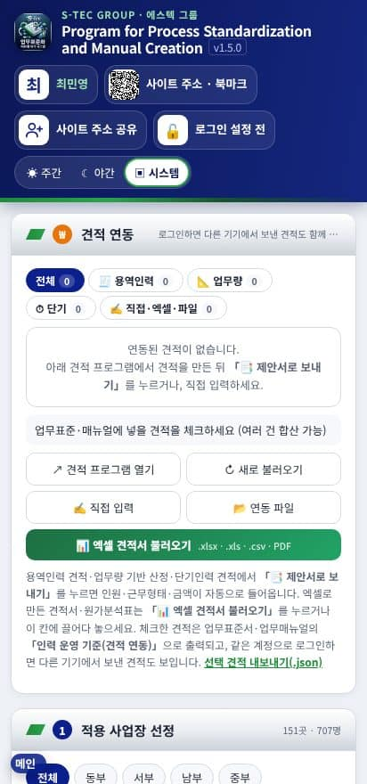
▲ 휴대폰 화면
▶ 순서
1. 화면이 한 줄로 바뀌고 순서대로 내려가며 작성
2. 출력 파일은 휴대폰 다운로드 폴더에 저장
3. PPT 영상은 PC 파워포인트에서 재생하는 것을 권장
23. 자주 묻는 질문
질문 | 답 |
|---|---|
프로그램이 잠겨 있어요 | 상단 「업무표준 담당」을 지정해야 열립니다. 로그인 후 잠기면 제작자에게 「프로그램별 권한」을 요청하세요. |
사업장이 안 보여요 | 관리 범위(담당 지사)가 지정된 계정입니다. 제작자에게 범위 변경을 요청하세요. |
영상 QR이 안 열려요 | 웹 주소(GitHub Pages)가 켜져 있어야 합니다. 제작자에게 문의하세요. |
표준시간·인원이 실제와 달라요 | 업무량은 WBE 사업장 유형 기본규모 기준입니다. 실측값은 업무량 산정 프로그램에서 다시 산정하세요. |
「🔒 조회 전용」 띠가 나와요 | 제작자가 이 기기를 조회 전용으로 지정했습니다. 보기만 되고 저장·삭제 버튼은 잠깁니다. |
개별 앱에 병행 안내가 나와요 | 개별 앱은 2026-12-18까지 함께 쓰고, 그 뒤에는 통합 앱 「S-Tec Operations」으로 옮깁니다. 아이디·비밀번호는 그대로입니다. |
법령이 바뀌었어요 | 법령 요약은 실무 참고용입니다. 원문을 확인하고 제작자에게 개정을 요청하세요. |
- 끝 -
Program for Process Standardization and Manual Creation v1.5.0 · Designed & Developed by Rat Rae Choi